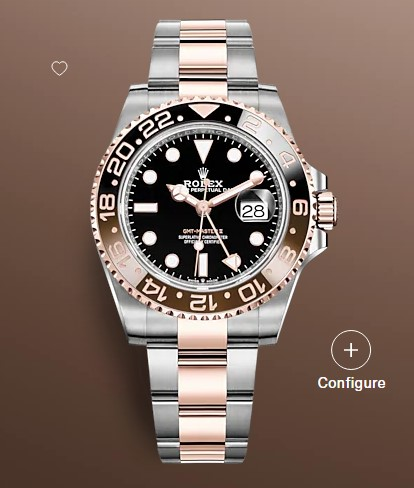

GMT-MASTER II
$2800.00
The Oyster Perpetual GMT-Master II in Everose Rolesor with an Oyster bracelet. This model features a black dial and a brown and black Cerachrom bezel. Designed to show the time in two different time zones simultaneously during intercontinental flights, the GMT-Master has come to be recognized for its robustness and versatile appearance.
Specifications
MODEL CASE: Oyster, 40 mm, Oystersteel and Everose gold OYSTER ARCHITECTURE: Monobloc middle case, screw-down case back and winding crown DIAMETER: 40 mm MATERIAL: Everose Rolesor - combination of Oystersteel and 18 ct Everose gold BEZEL: Bidirectional rotatable 24-hour graduated bezel. Two-colour brown and black Cerachrom insert in ceramic, moulded numerals and graduations WINDING CROWN: Screw-down, Triplock triple waterproofness system CRYSTAL: Scratch-resistant sapphire, Cyclops lens over the date WATER RESISTANCE: Waterproof to 100 metres / 330 feet MOVEMENT: Perpetual, mechanical, self-winding, GMT function CALIBRE: 3285, Manufacture Rolex PRECISION: -2/+2 sec/day, after casing FUNCTIONS: Centre hour, minute and seconds hands. 24-hour display. Second time zone with independent rapid-setting of the hour hand. Instantaneous date. Stop-seconds for precise time setting WINDING: Bidirectional self-winding via Perpetual rotor POWER RESERVE: Approximately 70 hours BRACELET: Oyster, flat three-piece links BRACELET MATERIAL: Everose Rolesor - combination of Oystersteel and 18 ct Everose gold CLASP: Folding Oysterlock safety clasp with Easylink 5 mm comfort extension linkDownload Watch Details